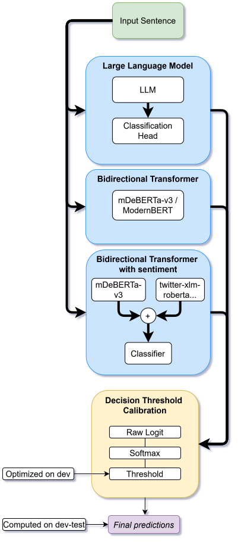

Abstract
This work presents AI Wizards' participation in CLEF 2025 CheckThat! Lab Task 1, where systems classify news sentences as subjective or objective. The task covers monolingual, multilingual, and zero-shot settings, with training and development data for Arabic, Bulgarian, English, German, and Italian, plus final evaluation on additional unseen languages.
Our system augments transformer sentence representations with sentiment scores from an auxiliary multilingual sentiment model. We evaluate mDeBERTaV3-base, ModernBERT-base for English, and a Llama 3.2-1B baseline, and apply decision threshold calibration to improve performance under class imbalance.
Method
The pipeline fine-tunes pretrained language models for binary subjectivity classification. For the sentiment-augmented model, positive, neutral, and negative scores from twitter-xlm-roberta-base-sentiment are concatenated with the transformer representation before the final classifier.
Transformer Models
mDeBERTaV3-base handles multilingual settings, ModernBERT-base is evaluated for English, and Llama 3.2-1B is adapted with a classification head.
Sentiment Features
Auxiliary sentiment probabilities are added to sentence embeddings to help identify opinion-laden or affective language.
Threshold Calibration
Decision thresholds are optimized on development data to improve macro-F1 and the subjective-class F1 score under imbalanced labels.

Task Setting
CheckThat! Task 1 focuses on sentence-level subjectivity detection in news articles. Each input sentence is labeled as objective or subjective, without access to the wider article context.
The system was evaluated across monolingual tracks for Arabic, English, German, and Italian; zero-shot tracks for Greek, Polish, Romanian, and Ukrainian; and a multilingual track. The repository includes the shared-task data files, training notebooks, scoring utilities, and model implementations.
Results
Sentiment augmentation improved subjective-class detection in several monolingual settings, especially English and Italian. The best multilingual development setup excluded Arabic and used sentiment-augmented mDeBERTaV3, reaching Macro-F1 0.7962 and SUBJ F1 0.7114 on the project evaluation split.
In the official CLEF 2025 challenge results, AI Wizards ranked first in the Greek zero-shot track with Macro-F1 0.51, and placed in the top group across several other zero-shot and monolingual tracks. A submission issue affected the official multilingual score; re-evaluation with the intended split yielded Macro-F1 0.68.
Limitations
Sentiment features were produced by a general-purpose model trained outside the news domain, and their usefulness varied across languages. Arabic remained challenging in monolingual, multilingual, and zero-shot settings, and pre-translation to English did not improve the final configuration.
The Llama 3.2-1B experiments were limited by computational constraints and used parameter-efficient fine-tuning; larger models or richer fusion mechanisms may lead to different outcomes.
BibTeX
@inproceedings{fasulo2025aiwizardscheckthat,
title = {AI Wizards at CheckThat! 2025: Enhancing Transformer-Based Embeddings with Sentiment for Subjectivity Detection in News Articles},
author = {Fasulo, Matteo and Babboni, Luca and Tedeschini, Luca},
booktitle = {Working Notes of the Conference and Labs of the Evaluation Forum (CLEF 2025)},
series = {CEUR Workshop Proceedings},
volume = {4038},
pages = {912--925},
address = {Madrid, Spain},
publisher = {CEUR-WS.org},
year = {2025},
url = {https://ceur-ws.org/Vol-4038/paper_70.pdf},
eprint = {2507.11764},
archivePrefix = {arXiv},
primaryClass = {cs.CL}
}